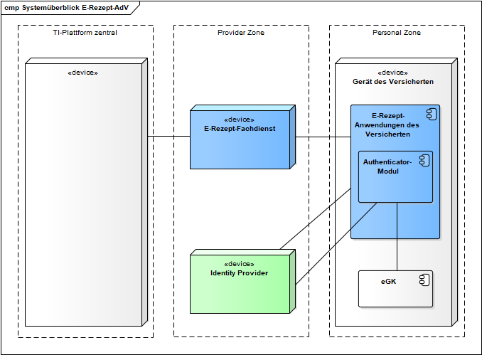

Elektronische Gesundheitskarte und Telematikinfrastruktur
Spezifikation
E-Rezept-Anwendung des Versicherten
| Version | 1.1.0 |
| Revision | 571466 |
| Stand | 07.12.2022 |
| Status | freigegeben |
| Klassifizierung | öffentlich |
| Referenzierung | gemSpec_eRp_AdV |
Änderungen zur Vorversion
Anpassungen des vorliegenden Dokumentes im Vergleich zur Vorversion können Sie der nachfolgenden Tabelle entnehmen.
Dokumentenhistorie
| Version |
Stand |
Kap./ Seite |
Grund der Änderung, besondere Hinweise |
Bearbeitung |
|---|---|---|---|---|
| 1.0.0 | 23.02.2022 | freigegeben | gematik | |
| 1.1.0 | 07.12.2022 | Einarbeitung gemäß Änderungsliste E-Rezept_Maintenance_22.3 | gematik |
Die vorliegende Spezifikation definiert die Anforderungen zu Herstellung, Test und Betrieb des Produkttyps E-Rezept-Anwendung des Versicherten.
Das Dokument richtet sich an Hersteller von Produkten des Produkttypen E-Rezept-Anwendung des Versicherten (gematik) sowie an Hersteller und Anbieter von weiteren Produkttypen der Fachanwendung E-Rezept.
Dieses Dokument enthält normative Festlegungen zur Telematikinfrastruktur des deutschen Gesundheitswesens. Der Gültigkeitszeitraum der vorliegenden Version und deren Anwendung in Zulassungs- oder Abnahmeverfahren wird durch die gematik GmbH in gesonderten Dokumenten (z.B. Produkttypsteckbrief, Leistungsbeschreibung, ...) festgelegt und bekanntgegeben.
Schutzrechts-/Patentrechtshinweis
Die nachfolgende Spezifikation ist von der gematik allein unter technischen Gesichtspunkten erstellt worden. Im Einzelfall kann nicht ausgeschlossen werden, dass die Implementierung der Spezifikation in technische Schutzrechte Dritter eingreift. Es ist allein Sache des Anbieters oder Herstellers, durch geeignete Maßnahmen dafür Sorge zu tragen, dass von ihm aufgrund der Spezifikation angebotene Produkte und/oder Leistungen nicht gegen Schutzrechte Dritter verstoßen und sich ggf. die erforderlichen Erlaubnisse/Lizenzen von den betroffenen Schutzrechtsinhabern einzuholen. Die gematik GmbH übernimmt insofern keinerlei Gewährleistungen.
Die vollständige Anforderungslage für den Produkttyp ergibt sich aus weiteren Konzept- und Spezifikationsdokumenten, diese sind in dem Produkttypsteckbrief des Produkttyps E-Rezept-Anwendung des Versicherten verzeichnet.
Diese Spezifikation beschreibt Anforderungen zu den Aspekten Sicherheit, Interoperabilität und Funktionalität. Die konkrete Ausgestaltung der Benutzeroberfläche (GUI) und der Benutzerführung (UX) wird während der Entwicklung festgelegt und ist nicht Teil dieser Spezifikation.
Anforderungen als Ausdruck normativer Festlegungen werden durch eine eindeutige ID sowie die dem RFC 2119 [RFC2119] entsprechenden, in Großbuchstaben geschriebenen deutschen Schlüsselworte MUSS, DARF NICHT, SOLL, SOLL NICHT, KANN gekennzeichnet.
Sie werden im Dokument wie folgt dargestellt:
<AFO-ID> - <Titel der Afo>
Text / Beschreibung
[<=]
Dabei umfasst die Anforderung sämtliche zwischen Afo-ID und der Textmarke [<=] angeführten Inhalte.
| In diesem Dokument werden auch Anforderungen aus dem Dokument Spezifikation E-Rezept-Frontend des Versicherten [gemSpec_eRp_FdV] referenziert. Sie sind im Titel mit "E-Rezept-FdV" bezeichnet. Diese Anforderungen gelten sowohl für das E-Rezept-Frontend des Versicherten als auch für die E-Rezept-Anwendung des Versicherten. Anforderungen, die sich nur auf die E-Rezept-AdV beziehen, werden im Titel der Anforderungen mit "E-Rezept-AdV:" bezeichnet. |
User Stories
Eine User Story ist eine in Alltagssprache formulierte Software-Anforderung. Sie ist bewusst kurz gehalten und umfasst in der Regel nicht mehr als zwei Sätze. User Stories werden im Rahmen der agilen Softwareentwicklung zusammen mit Akzeptanztests zur Spezifikation von Anforderungen eingesetzt. [Wikepedia:User Storie]
Aus diesem Grund kann in den User Stories eine abweichende Terminologie genutzt werden, welche für den Leser nachvollziehbar (bspw. Patient = Versicherter) ist.
Themen, die noch intern geklärt werden müssen oder eine Entscheidung seitens der Gesellschafter erfordern, sind wie folgt im Dokument gekennzeichnet:
| Beispiel für einen offenen Punkt. |
Die E-Rezept-Anwendung des Versicherten (E-Rezept-AdV) ist eine Anwendung für den Versicherten, welche die für die Wahrnehmung der Rechte der informationelle Selbstbestimmung in der Fachanwendung E-Rezept notwendigen Funktionalitäten bündelt und dezentrale Fachlogik der Fachanwendung E-Rezept ausführt.
Ausführungsumgebung der E-Rezept-AdV ist ein stationäres Gerät des Versicherten (GdV). Es steht unter alleiniger Kontrolle des Versicherten. Dem Versicherten obliegt es, durch geeignete Maßnahmen die Sicherheit der Daten zu stärken.
Unterschiede zum E-Rezept-FdV bestehen in der Ausführungsumgebung und im reduzierten Umfang der für den Nutzer ausführbaren Anwendungsfälle.
Im Systemkontext der E-Rezept-AdV interagieren verschiedene Akteure (aktive Komponenten) in unterschiedlichen Rollen mit der E-Rezept-AdV.
Tabelle 1 : TAB_AdVERP_001 – Akteure und Rollen
| Akteur | Rolle | Beschreibung |
|---|---|---|
| Nutzer der E-Rezept-AdV | Versicherter | primärer Anwender, Ausführen von fachlichen Anwendungsfällen mit Zugriff auf den E-Rezept-Fachdienst |
| Ausführungsumgebung | Gerät des Versicherten | Betriebs-/Ablaufumgebung der E-Rezept-AdV ein stationäres Gerät |
| Hersteller E-Rezept-AdV (gematik) | organisatorisch, kein Akteur in der Ausführung von E-Rezept-Anwendungsfällen | Der Hersteller E-Rezept-AdV stellt im Handbuch Informationen bereit bezüglich:
|
Die von der E-Rezept-AdV direkt erreichbaren Produkttypen der TI sind

Abbildung 1 : Systemüberblick E-Rezept-AdV
Identity Provider
Der Identity Provider (IDP) ist ein Dienst der TI, welcher die Authentifizierung von Nutzern und die Bereitstellung bestätigter Identitätsmerkmale der Nutzer als Plattformleistungen bereitstellt. Der IDP bietet außerdem die Möglichkeit, bereits erfolgte Authentifizierungen eines Nutzers im Sinne eines Single Sign-on nachzunutzen.
E-Rezept-Fachdienst
Der E-Rezept-Fachdienst ist ein offener fachanwendungsspezifischer Dienst in der TI, welcher den Workflow zu den E-Rezepten umsetzt.
Authenticator-Modul
Das Authenticator-Modul ist eine logische Komponente in der E-Rezept-AdV. Das Authenticator-Modul kapselt funktionale Anteile des Authentifizierungsprozesses und die Kommunikation mit der Smart Card des Nutzers. Im Authentisierungsprozess übernimmt das Authenticator-Modul die Rolle Authenticator-Modul und das E-Rezept-AdV die Rolle Anwendungsfrontend. Siehe [gemSpec_IDP_FD].
Für die Authentisierung mittels eGK greift die E-Rezept-AdV über die kontaktbehaftete Schnittstelle oder mittels des Funkstandards Near Field Communication (NFC) zur drahtlosen Datenübertragung auf die kontaktlose Schnittstelle auf die eGK zu. Das bedeutet für den Nutzer, dass er einen Kartenleser benötigt.
In diesem Kapitel werden übergreifende Anforderungen beschrieben, die sich aus den Themenfeldern Datenschutz und Sicherheit ergeben.
A_19176
Der Hersteller bzw. der Anbieter des E-Rezept-FdV MUSS den Nutzer über die Annahmen und Anforderungen seines Produktes an das Gerät, auf dem das E-Rezept-FdV läuft, sowie über den Bezug des Produkts aus vertrauenswürdigen App Stores informieren. <=
A_21359
Der Hersteller bzw. der Anbieter der E-Rezept-AdV MUSS es den Versicherten ermöglichen, die E-Rezept-AdV aus vertrauenswürdigen Quellen zu beziehen. <=
A_21364
Der Hersteller bzw. der Anbieter der E-Rezept-AdV MUSS die Versicherten darüber informieren, aus welchen vertrauenswürdigen Quellen sie die E-Rezept-AdV beziehen können und wie diese verifiziert werden können. <=
A_21365
Der Hersteller bzw. der Anbieter der E-Rezept-AdV MUSS sicherstellen, dass der Versicherte bei Erstbezug einer E-Rezept-AdV die Authentizität der vertrauenswürdigen Bezugsquelle verifizieren kann. <=
Hinweis: Beim Erstbezug der E-Rezept-AdV kann die Prüfung der Authentizität der Quelle noch nicht durch die E-Rezept-AdV selbst erfolgen. Dies kann z.B. über eine TLS-Serverauthentifizierung der Bezugsquelle oder das Einstellen der E-Rezept-AdV in einen vertrauenswürdigen Store erreicht werden.
A_21366
Die E-Rezept-AdV MUSS Updates ausschließlich von bekannten, vertrauenswürdigen und authentisierten Quellen laden. <=
A_21367
Die E-Rezept-AdV MUSS sicherstellen, dass die Klartextverarbeitung aller personenbezogenen bzw. sicherheitsrelevanten Daten eines Versicherten lokal auf dem Gerät des Versicherten erfolgt. <=
A_21368
Die E-Rezept-AdV MUSS sicherstellen, dass nur von der gematik zugelassener Code ausgeführt wird. Dies gilt auch für dynamisch geladenen Code. <=
A_21369
Der Hersteller der E-Rezept-AdV MUSS die E-Rezept-AdV unter Berücksichtigung des jeweils aktuellen OWASP Application Security Verification Standard Level 3 entwickeln und für jede Anforderung dokumentieren, wie sie umgesetzt ist bzw. ob sie ggf. für die E-Rezept-AdV nicht zutrifft. <=
A_19480
Das E-Rezept-FdV DARF Session-Daten (bspw. ACCESS_TOKEN und ID_TOKEN) NICHT an Dritte, außer im Rahmen der in den Anwendungsfällen spezifizierten Kommunikation, weitergeben. <=
A_20184
Das E-Rezept-FdV DARF NICHT Session-Daten (bspw. ACCESS_TOKEN und ID_TOKEN) unverschlüsselt auf permanenten Speichermedien ablegen. <=
A_20185
Das E-Rezept-FdV MUSS die Session nach einem angemessenen Session-Timeout, gemäß aktuellen Best-Practice-Empfehlungen, aktiv beenden. <=
A_20186
Das E-Rezept-FdV MUSS beim Beenden einer Session die Session-Daten (bspw. ACCESS_TOKEN und ID_TOKEN) sicher löschen. <=
A_19179
Das E-Rezept-FdV MUSS sicherstellen, dass die von ihm erzeugten Schlüssel eine ausreichende Qualität besitzen. <=
Für Festlegungen zur Schlüsselerzeugung siehe [gemSpec_Krypt#GS-A_4368].
Um die geforderte Entropie zu erreichen, können Informationen von zusätzlichen Quellen (bspw. Internet, Sensoren des Geräts) zusammengeführt werden.
A_19979
Das E-Rezept-FdV DARF Diensten Dritter NICHT Zugriff auf personenbezogene medizinische Daten geben. <=
A_19181-01
Das E-Rezept-FdV MUSS bei Konfigurationsmöglichkeiten die Voreinstellung wählen, so dass nur personenbezogene Daten, deren Verarbeitung für den jeweiligen bestimmten Verarbeitungszweck erforderlich ist, verarbeitet werden. <=
A_19182
Das E-Rezept-FdV MUSS Maßnahmen umsetzen, um die Auswirkung von unentdeckten Schwachstellen in benutzten Software-Bibliotheken zu minimieren. <=
Hinweis: Beispielmaßnahmen sind in [OWASP Proactive Control#C2] zu finden. Das gewählte Verfahren muss die gleiche Wirksamkeit aufweisen wie die Kapselung gemäß [OWASP Proactive Control#C2 Punkt 4].
A_19980
Das E-Rezept-FdV MUSS den Versicherten darauf hinweisen, dass durch die Nutzung von Diensten Dritter Daten an diese abfließen und welche Daten dies sind. <=
Hinweis: Dienste Dritter, an die andere Daten als personenbezogene medizinische Daten weitergeleitet werden können, sind z.B. Kartendienste oder der Arzneimitteldatenbanken. Näheres hierzu regelt die Rechtsverordnung nach § 360 (5) PDSG.
A_19981
Das E-Rezept-FdV MUSS vor einer Weitergabe von Daten an Dienste von Dritten einmalig das Einverständnis des Versicherten einholen (OPT-IN). <=
A_19982
Das E-Rezept-FdV MUSS es dem Versicherten ermöglichen das Einverständnis zur Weitergabe von Daten an Dienste von Dritten zu widerrufen und ihn dabei über eventuelle Einschränkungen in der Funktionalität informieren. <=
Hinweis: Nach dem Widerruf darf das E-Rezept-AdV keine Daten mehr an Dienste von Dritten weitergeben.
A_19983
Das E-Rezept-FdV DARF NICHT Dienste von Dritten nutzen, wenn diese bekannte Schwachstellen besitzen. <=
A_19984
Das E-Rezept-FdV SOLL eingehende Daten von Diensten Dritter validieren. <=
A_19186
Das E-Rezept-FdV MUSS Daten lokal sicher speichern, so dass keine andere App auf demselben Gerät unbefugt Zugriff auf die Daten hat. Insbesondere MUSS das E-Rezept-FdV Zugriffsschlüssel verschlüsselt ablegen. Außerdem MUSS das E-Rezept-FdV sicherstellen, dass vertrauliche Daten nicht vom Betriebssystem an anderen Ablageorten zwischengespeichert werden. <=
A_19187
Das E-Rezept-FdV DARF NICHT eine Verbindung zum E-Rezept-Fachdienst aufbauen, wenn es keinen ACCESS_TOKEN vom IDP erhalten hat. <=
A_19188
Das E-Rezept-FdV MUSS die von ihm verarbeiteten Daten so speichern, dass die Daten bei einer Deinstallation des E-Rezept-FdV mit gelöscht werden. <=
Hinweis: Zu diesen Daten gehören u.a. Session-Daten, Cashes, Schlüssel, E-Rezept-Inhaltsdaten.
Der Hersteller der E-Rezept-AdV muss die Anforderungen aus dem Abschnitt "Sicherer Softwareentwicklungsprozess" des Dokuments [gemSpec_DS_Hersteller] erfüllen.
Der Hersteller der E-Rezept-AdV muss die Anforderungen aus dem Abschnitt "Unterstützung von Audits" des Dokuments [gemSpec_DS_Hersteller] erfüllen.
Die Benutzeroberfläche, welche durch den Versicherten genutzt wird, um E-Rezept-Anwendungsfälle auszuführen, ist Teil der E-Rezept-AdV.
Ausführungen zur visuellen Darstellung, Usability und zu geltenden technischen Normen werden im Dokument [gemSpec_eRp_FdV] beschrieben.
Die konkrete Ausgestaltung der GUI und der Benutzerführung wird während der Entwicklung festgelegt und in diesem Dokument nicht weiter behandelt.
Im Folgenden sind Konfigurationsparameter der Anwendung beschrieben, deren Werte für die Nutzung der Schnittstellen benötigt werden. Darüber hinaus kann der Hersteller der E-Rezept-AdV zusätzliche Konfigurationsparameter definieren.
A_20647
Die E-Rezept-AdV MUSS die Parameter aus TAB_AdVERP_002 persistent speichern und bei der Initialisierung laden.
Tabelle 2 : TAB_AdVERP_002 – Konfiguration E-Rezept-AdV
| Parameter |
Beschreibung | Wertebereich (Default Wert) |
|---|---|---|
| Option Card Access Number (CAN) zur Authentisierung | falls eine Authentifizierung mittels eGK über die NFC-Schnittstelle unterstützt wird: Wahlmöglichkeit, ob die CAN der eGK in der E-Rezept-AdV gespeichert werden soll |
ja/nein Default: nein |
| Card Access Number | falls Option für Speichern der CAN aktiviert wurde | Default: leer |
| Option Usability Tracking | falls Usability Tracking durch die E-Rezept-AdV unterstützt werden kann: Wahlmöglichkeit, ob der Nutzer Usability Tracking unterstützen möchte |
ja/nein Default: nein |
| Option Crash Reporting | falls Crash Reporting durch die E-Rezept-AdV unterstützt werden kann: Wahlmöglichkeit, ob der Nutzer Crash Reporting unterstützen möchte |
ja/nein Default: nein |
A_20678
Die E-Rezept-AdV MUSS es dem Nutzer ermöglichen, die Parameter aus TAB_AdVERP_002 zu verwalten (anzeigen, ändern, löschen). <=
Die E-Rezept-AdV kann Protokolldateien schreiben, die eine Analyse technischer Vorgänge erlauben. Diese Protokolldateien sind dafür vorgesehen, aufgetretene Fehler zu identifizieren, die Performance zu analysieren und interne Abläufe zu beobachten.
Ein Logging der E-Rezept-AdV auf Geräten des Versicherten ist im Betrieb nicht vorgesehen, da die Protokolldaten zur Auswertung nicht erreichbar sind. Die Protokollierung auf einem externen Dienst ermöglicht eine Auswertung und kann die Fehlersuche unterstützen (siehe Usability Tracking und Crash Reporting). Für Testzwecke soll ein Logging zur Fehleranalyse möglich sein.
A_19682
Das E-Rezept-FdV MUSS für den Betrieb auf dem Gerät des Versicherten das Logging deaktiviert haben. <=
Eine Authentisierung gegenüber der TI nach dem Start der Anwendung erfolgt automatisch.
Eine TI-Session bezeichnet den Zeitraum von der Authentisierung gegenüber der TI bis zum Ablauf der Authentisierung.
Die Authentisierung gegenüber der TI erfolgt über ein Authentisierungsmodul, welche Bestandteil der E-Rezept-AdV ist oder als eigenständige Komponente ebenfalls auf dem Gerät des Versicherten (GdV) installiert ist. Das Authentisierungsmodul unterstützt in der ersten Stufe eine Authentisierung des Versicherten mit der eGK, wobei der Versicherte die PIN eingeben muss.
Der Versicherte weist sich gegenüber der TI mit der Identität der eGK aus.
Die Anbindung der eGK an das GdV kann mittels kontaktloser NFC-Schnittstelle oder der kontaktbehafteten Schnittstelle erfolgen.
Die Authentisierung des Nutzers erfolgt mittels eGK, MRPIN.home und, falls die NFC Schnittstelle genutzt wird, der CAN.
Die Authentisierungsdauer einer TI-Session beträgt maximal 12 Stunden ab dem Zeitpunkt der Erstellung des Authentisierungstokens. Wird die Anwendung durch den Nutzer aktiv beendet, werden die Session-Daten gelöscht und eine erneute Authentisierung wird erforderlich.
A_20117
Das E-Rezept-FdV MUSS, falls für den Aufruf des E-Rezept-Fachdienstes kein gültiger ACCESS_TOKEN sowie kein gültiger ACCESS_CODE vorliegt, die TI-Session starten. <=
A_20035
Das E-Rezept-FdV MUSS zum Start der TI-Session die Aktivität "Authentisierung des Nutzers gegenüber TI" ausführen. <=
Für die Aktivität "Authentisierung des Nutzers gegenüber TI" siehe Kapitel .
A_19481
Das E-Rezept-FdV MUSS zum Beenden der App-Session die ACCESS_TOKEN und den ACCESS_CODE sicher löschen. <=
A_19482
Das E-Rezept-FdV MUSS zum Beenden der TI-Session
Die E-Rezept-AdV nutzt TLS-Verbindungen für die Kommunikation zu den Diensten der TI. Es verbindet sich mit dem E-Rezept-Fachdienst und einem Identity Provider.
A_19438-01
Das E-Rezept-FdV MUSS für die Kommunikation mit dem E-Rezept-Fachdienst die vom E-Rezept-Fachdienst im Internet bereitgestellten Schnittstellen nutzen. <=
Für die URLs der Schnittstellen siehe [gemSpec_FD_eRP#A_21782-*].
A_19747
Das E-Rezept-FdV MUSS die URL für die Kommunikation mit dem E-Rezept-Fachdienst gemäß https://<FQDN aus DNS Lookup>:443/<path> bilden. <=
Die Informationen zu den Endpunkten des Identity Providers ermittelt die E-Rezept-AdV aus dem Discovery Document. Siehe auch [ gemSpec_IDP_Frontend#A_20512 - Regelmäßiges Einlesen des Discovery Document ]. Das Discovery Document ist vom IDP-Dienst unter der URL /.well-known/openid-configuration abrufbar.
A_19215
Das E-Rezept-FdV MUSS mit den Diensten der TI ausschließlich über TLS kommunizieren. <=
Für Informationen zur Nutzung der TLS siehe [gemSpec_Krypt].
A_20206-01
Das E-Rezept-FdV MUSS mit den Diensten Dritter ausschließlich über TLS kommunizieren. <=
A_19216
Das E-Rezept-FdV MUSS bei jedem Verbindungsaufbau den Dienst der TI anhand seines TLS-Zertifikats authentifizieren und MUSS die Verbindungen ablehnen, falls die Authentifizierung fehlschlägt. <=
A_20014-01
Das E-Rezept-FdV MUSS in alle HTTP-Requests an Dienste der TI im äußeren Http-Request den HTTP-Header user-agent gemäß [RFC7231] mit
<Produktname>/<Produktversion> <Herstellername>/<client_id> gemäß der Produktidentifikation befüllen:
Für Informationen zur Produktidentifikation siehe [gemSpec_OM].
A_21553
Der Hersteller des E-Rezept-FdV MUSS organisatorische Prozesse für API-KEYs für die Kommunikation zum E-Rezept-Fachdienst unterstützen. <=
A_21554
Das E-Rezept-FdV MUSS den von der gematik vergebenen API-KEY im E-Rezept-FdV verwahren. <=
Der Wechsel des API-KEY erfolgt mit einer neuen Version der E-Rezept-AdV.
A_21555
Das E-Rezept-FdV MUSS in allen HTTP-Requests an den E-Rezept-Fachdienst im äußeren HTTP-Request den HTTP-Header "X-api-key" mit dem von der gematik übermittelten API-KEY befüllen. <=
Der HTTP-Header X-api-key wird im äußeren HTTP-Request, d.h. außerhalb der Verschlüsselung des VAU-Transports, gesendet.
A_21567
Das E-Rezept-FdV MUSS in alle Anfragen an den E-Rezept-Fachdienst im äußeren HTTP-Request den HTTP-Header "X-erp-user" mit dem Wert "v" einfügen. <=
A_21570
Das E-Rezept-FdV MUSS in alle Anfragen an den E-Rezept-Fachdienst im äußeren HTTP-Request den HTTP-Header "X-erp-resource" mit dem Wert gemäß der angefragten Ressource im FHIR-Request einfügen. <=
Tabelle 3 : TAB_FdVERP_019 - HTTP-Header "X-erp-resource"
| Operation |
X-erp-resource |
|---|---|
| DELETE /Communication/<id> |
Communication |
| GET /AuditEvent/ |
AuditEvent |
| GET /AuditEvent/<id> |
AuditEvent |
| GET /Communication/ |
Communication |
| GET /Communication/<id> |
Communication |
| GET /Device/ |
Device |
| GET /MedicationDispense/ |
MedicationDispense |
| GET /MedicationDispense/<id> |
MedicationDispense |
| GET /metadata/ |
metadata |
| GET /Task/ |
Task |
| GET /Task/<id> |
Task |
| POST /Task/<id>/$abort |
Task |
Der Nutzer authentisiert sich für Zugriffe auf Dienste der TI gegenüber der TI. Die E-Rezept-AdV erhält bei erfolgreicher Authentisierung einen Authentisierungstoken (ACCESS_TOKEN), welcher für die Authentisierung bei den Diensten der TI weitergeleitet wird.
A_20167
Das E-Rezept-FdV MUSS für den Zugriff auf Dienste der TI, wenn kein gültiger ACCESS_TOKEN vorliegt, sich gegenüber einem Identity Provider der TI in den Rollen Authenticator-Modul und Anwendungsfrontend Applikation authentisieren. <=
Für Informationen zum Ablauf der Authentisierung siehe [gemSpec_IDP_Dienst] und [gemSpec_IDP_Frontend].
Die Kommunikation zum E-Rezept-Fachdienst wird zusätzlich zu TLS über einen sicheren Kanal zwischen die E-Rezept-AdV und der Vertrauenswürdigen Ausführungsumgebung (VAU) im E-Rezept-Fachdienst gesichert.
A_19740-01
Das E-Rezept-FdV MUSS für alle Anfragen an den E-Rezept-Fachdienst für
Für Informationen zum Kommunikationsprotokoll zwischen E-Rezept-AdV und der VAU des E-Rezept-Fachdienstes siehe und .
Die E-Rezept-AdV verwendet bei den in TAB_FdVERP_017 dargestellten Aktivitäten Zertifikate.
Tabelle 4 : TAB_FdVERP_017 – Zertifikatsnutzung
| Aktivität |
Zertifikat der TI |
Zertifikatstyp |
Rollen-OID |
Nutzung |
|---|---|---|---|---|
| TLS-Verbindungsaufbau zum E-Rezept-Fachdienst |
nein |
TLS Internet Zertifikat |
n/a |
aktiv |
| TLS-Verbindungsaufbau zum IDP | nein | TLS Internet Zertifikat | n/a | aktiv |
| Aufbau sicherer Kanal zur VAU des E-Rezept-Fachdienstes |
ja |
C.FD.ENC |
oid_erp_vau |
aktiv |
| Signaturzertifikat Fachdienst | ja | C.FD.SIG | oid_erezept | aktiv |
Es gelten folgende übergreifende Festlegungen für die Prüfung aktiv durch das E-Rezept-FdV genutzter Zertifikate.
A_19739
Das E-Rezept-FdV MUSS alle Zertifikate, die es aktiv verwendet (bspw. TLS-Verbindungsaufbau), auf Integrität und Authentizität prüfen. Falls die Prüfung kein positives Ergebnis ("gültig") liefert, so MUSS es die von dem Zertifikat und den darin enthaltenen Attributen (bspw. öffentliche Schlüssel) abhängenden Arbeitsabläufe ablehnen.
Das E-Rezept-FdV MUSS alle öffentlichen Schlüssel, die es verwenden will, auf eine positiv verlaufene Zertifikatsprüfung zurückführen können. <=
"Ein Zertifikat aktiv verwenden" bedeutet im Sinne von A_19739, dass eine E-Rezept-AdV einen dort aufgeführten öffentlichen Schlüssel innerhalb einer kryptografischen Operation (Signaturprüfung, Verschlüsselung, Signaturprüfung von öffentlichen (EC)DH-Schlüsseln etc.) nutzt. Erhält die E-Rezept-AdV ein Datenobjekt, in dem Signaturen und Zertifikate enthalten sind und behandelt es dieses als opakes Datenobjekt, ohne die Zertifikate darin gesondert zu betrachten, dann verwendet die E-Rezept-AdV diese Zertifikate im Sinne von A_19739 passiv.
In der folgenden Anforderung sind die Schritte zum Prüfen eines Zertifikates der TI beschrieben. In den Schritten werden TUC_PKI_* referenziert. Sie dienen als Rahmen für den Ablauf der Prüfschritte. Die TUC_PKI_* sind in dieser Afo nicht normativ umzusetzen.
A_20032-01
Das E-Rezept-FdV MUSS bei der Prüfung von X.509-Zertifikaten der TI folgende Prüfschritte durchlaufen.
Für die Prüfung des Online-Status von Zertifikaten der TI wird die Schnittstelle I_OCSP_Status_Information genutzt. Siehe [gemSpec_PKI#9]. Die Schnittstelle wird durch den E-Rezept-Fachdienst angeboten. Siehe auch [gemSpec_FD_eRp#A_20024 - E-Rezept-Fachdienst - Bereitstellung OCSP-Forwarder].
Der E-Rezept-Fachdienst stellt neben der TSL eine zweite Lösung bereit, im E-Rezept-AdV einen Vertrauensraum auf Basis eines Root-CA-Zertifikats aufzubauen. Diese Lösung besteht in einer JSON-Struktur, die eine Zertifikatskette (CA-Zertifikate, Cross-Zertifikate) hin zur dem E-Rezept-FdV bekannten Root-CA enthält. Die JSON-Struktur ist einfacher zu verarbeiten. Die Anforderungen und Schritte zum Aufbau dieser vertrauenswürdigen Zertifikatskette finden sich in der Spezifikation [gemSpec_Krypt] in Abschnitt 7.2.2 "Client-seitige Prüfung der E-Rezept-VAU-Identität".
Folgende Vorgaben gelten für die Prüfung von Internet-Zertifikaten.
A_20033
Das E-Rezept-FdV MUSS für die Prüfung des internetseitigen Zertifikats von Diensten der TI das Zertifikat auf ein CA-Zertifikat einer CA, die die "CA/Browser Forum Baseline Requirements for the Issuance and Management of Publicly-Trusted Certificates" (https://cabforum.org/baseline-requirements-documents/) erfüllt, kryptographisch (Signaturprüfung) zurückführen können. Ansonsten MUSS es das Zertifikat als "ungültig" bewerten.
Das E-Rezept-FdV MUSS die zeitliche Gültigkeit des Zertifikats prüfen. Falls diese Prüfung negativ ausfällt, muss es das Zertifikat als "ungültig" bewerten. <=
Hinweis: Der erste Teil von A_20033 ist gleichbedeutend damit, dass das CA-Zertifikat im Zertifikats-Truststore eines aktuellen Webbrowsers ist.
In diesem Kapitel wird die Umsetzung der im systemspezifischen Konzept [gemSysL_eRp] spezifizierten Anwendungsfälle in der E-Rezept-AdV beschrieben.
| Die in diesem Kapitel aufgeführten User Stories schildern die Absichten des Nutzers in Verbindung mit der E-Rezept-AdV und dienen als Lesehilfe zu den fachlichen Anwendungsfällen. Die User Stories erheben keinen Anspruch auf Vollständigkeit. |
User Stories:
Mit diesem Anwendungsfall kann sich der Nutzer (Versicherter) die Informationen zu allen seinen auf dem E-Rezept-Fachdienst hinterlegten E-Rezepten in seine E-Rezept-AdV herunterladen und speichern, um sie sich anschließend anzeigen zu lassen.
A_20576
Das E_Rezept-AdV MUSS den Anwendungsfall "UC 3.1 - E-Rezepte durch Versicherten abrufen" aus [gemSysL_eRp] gemäß TAB_AdVERP_009 umsetzen.
Tabelle 5: TAB_AdVERP_009 - E-Rezepte abrufen
| Name |
E-Rezepte abrufen |
| Auslöser |
|
| Akteur | Versicherter |
| Vorbedingung |
|
| Nachbedingung |
|
| Standardablauf |
|
A_19347
Das E-Rezept-FdV MUSS im Anwendungsfall "E-Rezepte empfangen" zum Herunterladen alle E-Rezepte des Nutzers die HTTP-Operation GET /Task mit
Für weitere Informationen siehe Operation "Alle E-Rezepte ansehen" aus der API-Schnittstelle [E-Rezept API Dokumentation].
Falls E-Rezepte auf dem E-Rezept-Fachdienst für den Versicherten abgelegt sind, dann liefert der Response ein Set von Task Ressourcen. Für die Spezifikation der Task Ressource siehe [gemSpec_DM_eRp]. Jeder Task enthält u.a. die folgenden fachlichen Informationen:
Das E-Rezept-FdV prüft die FHIR-Signatur des E-Rezept-Bundles. Hierzu wird das base64-kodierte data Element aus signature dekodiert. Es enthält eine JSON Web Signature mit Information zum Algorithmus, eine Referenz zum Zertifikat und die signierten Daten.
A_20053
Das E-Rezept-FdV MUSS die FHIR-Signatur des E-Rezept-Bundles aus dem vom E-Rezept-Fachdienst heruntergeladenen E-Rezept gemäß [RFC7515#5.2] prüfen und bei negativer Prüfung die Verarbeitung abbrechen. <=
Der Ablauf der Prüfung erfolgt in den folgenden Schritten:
A_20594
Die E-Rezept-AdV MUSS im Anwendungsfall "E-Rezepte abrufen" die HTTP-Operation GET /MedicationDispense mit
Für weitere Informationen siehe "Abgabeinformationen abrufen" in der API-Schnittstelle [E-Rezept API Dokumentation].
Falls auf dem E-Rezept-Fachdienst Informationen zur Abgabe durch die abgebende LEI hinterlegt wurden, liefert der Response ein MedicationDispense Ressource. Zur Spezifikation der MedicationDispense Ressource siehe [gemSpec_DM_eRp]. Diese beinhaltet u.a. die folgenden fachlichen Informationen zum abgegebenen Arzneimittel:
Mittels der Task-ID können die Dispensierinformationen den E-Rezepten zugeordnet werden.
A_20595
Die E-Rezept-AdV MUSS dem Nutzer die vom E-Rezept-Fachdienst heruntergeladenen E-Rezepte in geeigneter Weise anzeigen. <=
A_20036
Das E-Rezept-FdV MUSS dem Nutzer die Abgabeinformationen in geeigneter Weise anzeigen <=
User Stories:
Mit diesem Anwendungsfall kann der Nutzer (Versicherter) einzelne ausgewählte oder alle E-Rezepte, die auf dem E-Rezept-Fachdienst gespeichert sind, löschen.
A_19219
Das E-Rezept-FdV MUSS es dem Nutzer ermöglichen, ein oder mehrere E-Rezepte aus der Übersicht aller E-Rezepte zum Löschen auf dem Fachdienst zu markieren. <=
A_19220
Das E-Rezept-FdV MUSS vom Nutzer eine Bestätigung einholen, dass die selektierten E-Rezepte gelöscht werden sollen und die Möglichkeit geben, das Löschen abzubrechen. <=
A_20575
Das E-Rezept-AdV MUSS den Anwendungsfall "UC 3.2 - E-Rezept durch Versicherten löschen" aus [gemSysL_eRp] gemäß TAB_AdVERP_008 umsetzen.
Tabelle 6 : TAB_AdVERP_008 – E-Rezepte löschen
| Name | E-Rezepte löschen |
| Auslöser |
|
| Akteur | Versicherter |
| Vorbedingung |
|
| Nachbedingung |
|
| Standardablauf |
|
A_20648
Die E-Rezept-AdV MUSS im Anwendungsfall "E-Rezepte löschen" für jedes zu löschende E-Rezept die HTTP-Operation POST /Task/<id>/$abort des E-Rezept-Fachdienstes mit
Für weitere Informationen siehe Operation "Ein E-Rezept löschen" aus der API-Schnittstelle [E-Rezept API Dokumentation].
User Stories:
Mit diesem Anwendungsfall kann der Nutzer (Versicherter) Einsicht in alle protokollierten Zugriffe in Verbindung mit seinen E-Rezepten nehmen.
A_19209
Das E-Rezept-FdV MUSS den Anwendungsfall "UC 3.5 - Protokolldaten abrufen" aus [gemSysL_eRp] gemäß TAB_FdVERP_014 umsetzen.
Tabelle 7 : TAB_FdVERP_014 – Protokolldaten anzeigen
| Name | Protokolldaten anzeigen |
| Auslöser |
|
| Akteur | Versicherter |
| Vorbedingung | Der Nutzer ist gegenüber der TI authentifiziert. |
| Nachbedingung | Die Protokolldaten werden angezeigt |
| Standardablauf |
|
| Varianten / Alternativen | Als Alternative zur Abfrage aller Protokolleinträge können die Protokolleinträge zu einer spezifischen Task-ID abgefragt werden. |
A_19210
Das E-Rezept-FdV MUSS im Anwendungsfall "Protokolldaten anzeigen" zum Abrufen der Protokolleinträge vom E-Rezept-Fachdienst die HTTP-Operation GET /AuditEvent mit
Für weitere Informationen siehe "Eingriff in das Zugriffsprotokoll" in der API-Schnittstelle [E-Rezept API Dokumentation].
Der Response beinhaltet ein Bundle mit einem searchset von AuditEvent Ressourcen. Eine AuditEvent Ressource beinhaltet die folgenden Informationen (Siehe auch [ ]):
A_19211
Das E-Rezept-FdV MUSS eine Anzeige für die Protokolldaten umsetzten, in der die Protokolleinträge übersichtlich dargestellt werden. <=
Die E-Rezept-AdV kann es dem Nutzer über einen Link in der Anzeige ermöglichen, die Details zum referenzierten E-Rezept anzuzeigen.
Die Protokolldaten sollen für den Nutzer sortierbar und filterbar über die Angabe von Filterkriterien wie z.B. Zeitraum, dargestellt werden.
A_19479
Das E-Rezept-FdV MUSS es dem Nutzer ermöglichen, die Suchergebnisse nach festgelegten Kriterien zu filtern. <=
User Stories:
· Als Versicherter möchte ich, dass ich Nachrichten von meiner Apotheke empfangen kann.
Mit diesem Anwendungsfall kann der Nutzer (Versicherter) Nachrichten von der Apotheke oder anderen Versicherten empfangen und anzeigen lassen.
A_21527
Die E-Rezept-AdV MUSS den Anwendungsfall "UC 3.4 - Nachrichten durch Versicherten empfangen" aus [gemSysL_eRp] gemäß TAB_AdVERP_010 umsetzen.
Tabelle 8 : TAB_AdVERP_010 - Nachrichten empfangen
| Name |
Nachrichten empfangen |
| Auslöser |
|
| Akteur |
Versicherter |
| Vorbedingung |
Der Nutzer ist gegenüber der TI authentifiziert. |
| Nachbedingung |
Die Nachrichten stehen zur Anzeige bereit. |
| Standardablauf |
|
A_19205
Das E-Rezept-FdV MUSS im Anwendungsfall "Nachrichten von Apotheken anzeigen" zum Herunterladen von Nachrichten vom E-Rezept-Fachdienst die HTTP-Operation GET /Communication mit
Für weitere Informationen siehe "Anwendungsfall Alle Nachrichten vom E-Rezept-Fachdienst abrufen" und "Anwendungsfall Auf neue Nachrichten im E-Rezept-Fachdienst prüfen" in der API-Schnittstelle [E-Rezept API Dokumentation].
Der Response liefert ein Bundle mit Communication Ressourcen.
Eine Communication Ressource beinhaltet u.a. die fachlichen Informationen:
A_19208
Das E-Rezept-FdV MUSS die vom E-Rezept-Fachdienst heruntergeladenen Nachrichten in geeigneter Weise anzeigen. <=
User Stories:
Mit diesem Anwendungsfall kann der Nutzer von ihm zuvor versandte Nachrichten auf dem E-Rezept-Fachdienst löschen.
A_21523
Das E-Rezept-FdV MUSS es dem Nutzer ermöglichen, ein oder mehrere Nachrichten zum Löschen auf dem E-Rezept-Fachdienst zu markieren. <=
A_21524
Das E-Rezept-FdV MUSS vom Nutzer eine Bestätigung einholen, dass die selektierten Nachrichten gelöscht werden sollen und die Möglichkeit geben, das Löschen abzubrechen. <=
A_21525
Das E-Rezept-FdV MUSS den Anwendungsfall "UC 3.8 - Nachricht durch Versicherten löschen" aus [gemSysL_eRp] gemäß TAB_FdVERP_018 umsetzen.
Tabelle 9 : TAB_FdVERP_018 – Nachrichten löschen
| Name | Nachrichten löschen |
| Auslöser |
|
| Akteur | Versicherter |
| Vorbedingung |
|
| Nachbedingung | Die Nachrichten sind im E-Rezept-Fachdienst unwiederbringlich gelöscht. |
| Standardablauf |
|
A_21526
Das E-Rezept-FdV MUSS im Anwendungsfall "Nachrichten löschen" für jede zu löschende Nachricht die HTTP-Operation DELETE /Communication/<id> des E-Rezept-Fachdienstes mit
Wenn die Nachricht bereits vom Empfänger abgerufen wurde, dann wird im Response des E-Rezept-Fachdienstes im HTTP-Header eine Warnung mit dem Zeitpunkt des Abrufes übermittelt.
Tritt ein Fehler bei der Verarbeitung von Operationsaufrufen des E-Rezept-Fachdienstes auf, dann antwortet der E-Rezept-Fachdienst mit einer Fehlermeldung. Das Format und die verwendeten Fehlercodes sind in den Spezifikationen der Interfaces beschrieben. Weiterhin können Fehler in der lokalen Verarbeitung auftreten.
A_19560
Das E-Rezept-FdV MUSS, wenn bei der Abarbeitung der Aktivitäten eines Anwendungsfalls ein Fehler auftritt und keine Fehlerbehandlung beschrieben ist, den Anwendungsfall abbrechen. <=
Die E-Rezept-AdV soll dem Nutzer nach einem Abbruch eine verständliche Fehlermeldung anzeigen.
Wenn die Möglichkeit besteht, dass der Nutzer das fehlerverursachende Problem selbst beheben kann, kann die E-Rezept-AdV den Nutzer auf die Lösung hinweisen.
A_19561
Das E-Rezept-FdV SOLL dem Nutzer im Fehlerfall einen Hinweis geben, wenn es für den Nutzer Handlungsmöglichkeiten dazu gibt. <=
Dienste der TI:
| Datenfeld | Herkunft | Beschreibung |
|---|---|---|
| E-Rezept-Fachdienst - E-Rezept-Schnittstelle FQDN, Port | DNS-Abfrage | Lokalisierungsinformationen |
| E-Rezept-Fachdienst - OCSP-Status-Proxy FQDN, Port | DNS-Abfrage | Lokalisierungsinformationen |
| Identity Provider: FQDN, Port, Path | DNS-Abfrage | Lokalisierungsinformationen |
Session-Daten (TI-Session)
| Datenfeld | Herkunft | Beschreibung |
|---|---|---|
| ACCESS_TOKEN | IDP Token-Endpunkt |
Authentisierungs-Token für den Zugriff auf Dienste der TI |
| ACCESS_CODE | IDP |
E-Rezept:
| Datenfeld | Herkunft | Beschreibung |
|---|---|---|
| E-Rezept-ID | Task.identifier mit NamingSystem "PrescriptionID" E-Rezept-Fachdienst (GET /Task) |
https://simplifier.net/erezept-workflow/gemerxprescriptionid |
| Task-ID | E-Rezept-Fachdienst (GET /Task) alternativ: E-Rezept-Token (2D-Code scannen) |
https://simplifier.net/erezept-workflow/gemerxprescriptionid |
| Einlösedatum | acceptDate E-Rezept-Fachdienst (GET /Task) |
Datum, bis wann das E-Rezept zur Erstattung durch die Krankenkasse einlösbar ist https://simplifier.net/erezept-workflow/acceptdate |
| Gültig bis | expiryDate E-Rezept-Fachdienst (GET /Task) |
Datum, an dem das E-Rezept seine Gültigkeit verliert https://simplifier.net/erezept-workflow/expirydate |
| E-Rezept-Bundle | E-Rezept-Fachdienst (GET /Task) | https://simplifier.net/erezept/kbvprerpbundle |
| FHIR signature | signature E-Rezept-Fachdienst (GET /Task) |
durch den E-Rezept-Fachdienst erstellte FHIR-Signatur des E-Rezept-Bundles |
| MedicationDispense | E-Rezept-Fachdienst (GET /MedicationDispense) | https://simplifier.net/erezept-workflow/gemerxmedicationdispense |
| Protokolleinträge | E-Rezept-Fachdienst (GET /AuditEvent) | https://simplifier.net/erezept-workflow/gemerxauditevent |
Weitere detaillierte Daten zum Informationsmodell der Verordnung sind im Datenmodell der KBV https://simplifier.net/erezept/kbvprerpbundle enthalten. Siehe [gemSpec_DM_eRp].
MedicationDispense
| Datenfeld | Herkunft | Beschreibung |
|---|---|---|
| PZN | Medikamentinformationen | https://simplifier.net/erezept/kbvprerpmedikamentpzn |
| Beschreibung | ||
| Darreichungsform | ||
| Menge | ||
| LEI, welche das Mittel abgegeben hat | performer | https://simplifier.net/erezept-workflow/gemerxorganization |
| ID des zugehörigen Task | supportingInformation | https://simplifier.net/erezept-workflow/gemerxtask |
Protokolleintrag:
| Datenfeld | Herkunft | Beschreibung |
|---|---|---|
| ID des Datenobjektes, auf das zugegriffen wurde | AuditEvent.entity | https://simplifier.net/erezept-workflow/gemerxauditevent |
| Rezept-ID | AuditEvent.entity.description | |
| lesbarer Beschreibung in einfacher Sprache | AuditEvent.text | |
| Name des Zugreifenden | AuditEvent.agent.name | |
| Zeitpunkt des Zugriffs | AuditEvent.recorded | |
| Ergebnis der aufgerufenen Operation | AuditEvent.outcome |
Eine Darstellung der hardwareseitigen Verteilung des Produkttyps bzw. seiner Teilsysteme und der Einbettung in die physikalische Umgebung wird nicht benötigt.
| Kürzel |
Erläuterung |
|---|---|
| AdV | Anwendung des Versicherten |
| CAN | Card Access Number |
| DF.HCA | Gesundheitsanwendung, Health Care Application |
| eGK | elektronische Gesundheitskarte |
| eRp | E-Rezept (elektronisches Rezept) |
| FdV | Frontend des Versicherten |
| GdV | Gerät des Versicherten |
| GUI | graphical user interface, Benutzeroberfläche |
| IDP | Identity Provider |
| MRPIN.home | Multireferenz-PIN Das Geheimnis entspricht der Personal Identification Number Card Holder (PIN des Karteneigentümers) |
| NFC | Near Field Communication |
| UX | User Experience |
| VAU | Vertrauenswürdige Ausführungsumgebung |
| Begriff |
Erläuterung |
|---|---|
| Funktionsmerkmal | Der Begriff beschreibt eine Funktion oder auch einzelne, eine logische Einheit bildende Teilfunktionen der TI im Rahmen der funktionalen Zerlegung des Systems. |
Das Glossar wird als eigenständiges Dokument (vgl. [gemGlossar]) zur Verfügung gestellt.
Die nachfolgende Tabelle enthält die Bezeichnung der in dem vorliegenden Dokument referenzierten Dokumente der gematik zur Telematikinfrastruktur. Der mit der vorliegenden Version korrelierende Entwicklungsstand dieser Konzepte und Spezifikationen wird pro Release in einer Dokumentenlandkarte definiert; Version und Stand der referenzierten Dokumente sind daher in der nachfolgenden Tabelle nicht aufgeführt. Deren zu diesem Dokument jeweils gültige Versionsnummern sind in der aktuellen, von der gematik veröffentlichten Dokumentenlandkarte enthalten, in der die vorliegende Version aufgeführt wird.
| [Quelle] |
Herausgeber: Titel |
|---|---|
| [gemGlossar] | gematik: Einführung der Gesundheitskarte – Glossar |
| [gemSpec_DS_Hersteller] | gematik: Spezifikation Datenschutz- und Sicherheitsanforderungen der TI an Hersteller |
| [gemSpec_eRp_FdV] | gematik: Spezifikation E-Rezept-Frontend des Versicherten |
| [gemSpec_FD_eRP] | gematik: Spezifikation E-Rezept-Fachdienst |
| [gemSpec_IDP_Dienst] | gematik: Spezifikation Identity Provider - Dienst |
| [gemSpec_IDP_FD] | gematik: Spezifikation Identity Provider – Nutzungsspezifikation für Fachdienste |
| [gemSpec_IDP_Frontend] | gematik: Spezifikation Identity Provider - Frontend |
| [gemSpec_Krypt] | gematik: Übergreifende Spezifikation – Verwendung kryptographischer Algorithmen in der Telematikinfrastruktur |
| [gemSpec_OM] | gematic: Übergreifende Spezifikation – Operations und Maintenance |
| [gemSpec_PKI] | gematik: Übergreifende Spezifikation – Spezifikation PKI |
| [Quelle] |
Herausgeber (Erscheinungsdatum): Titel |
|---|---|